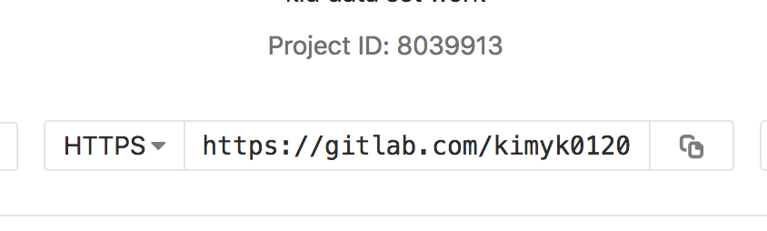
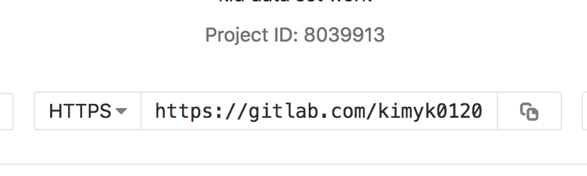
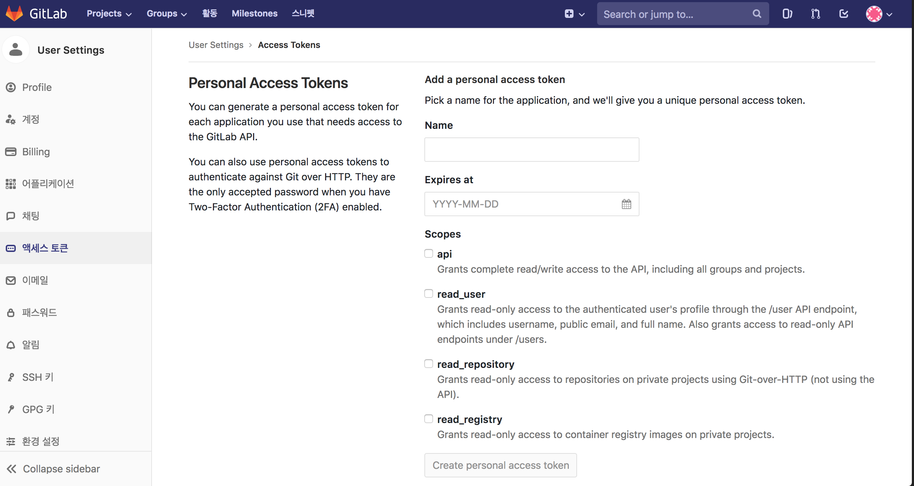
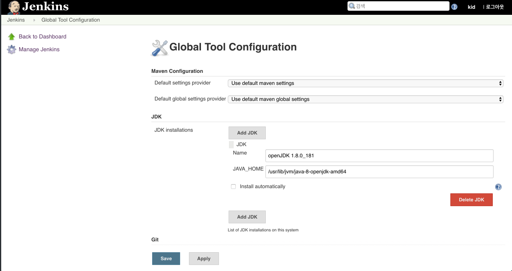
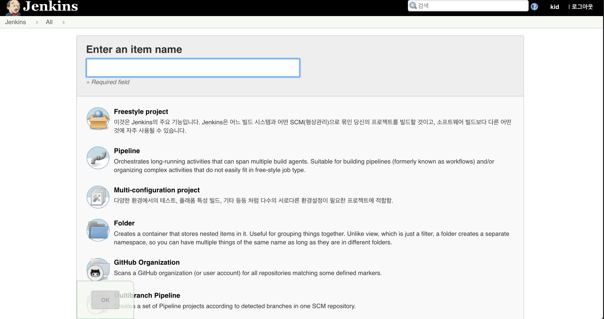
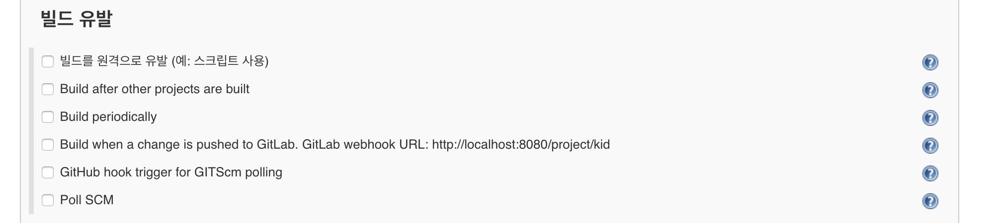
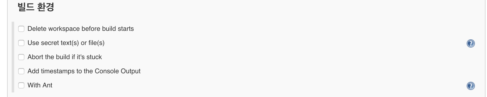
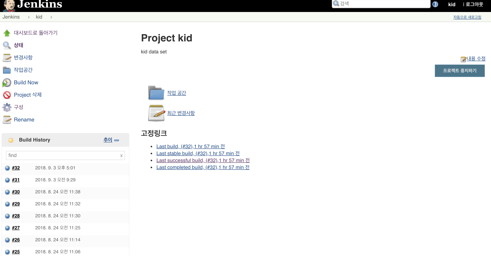
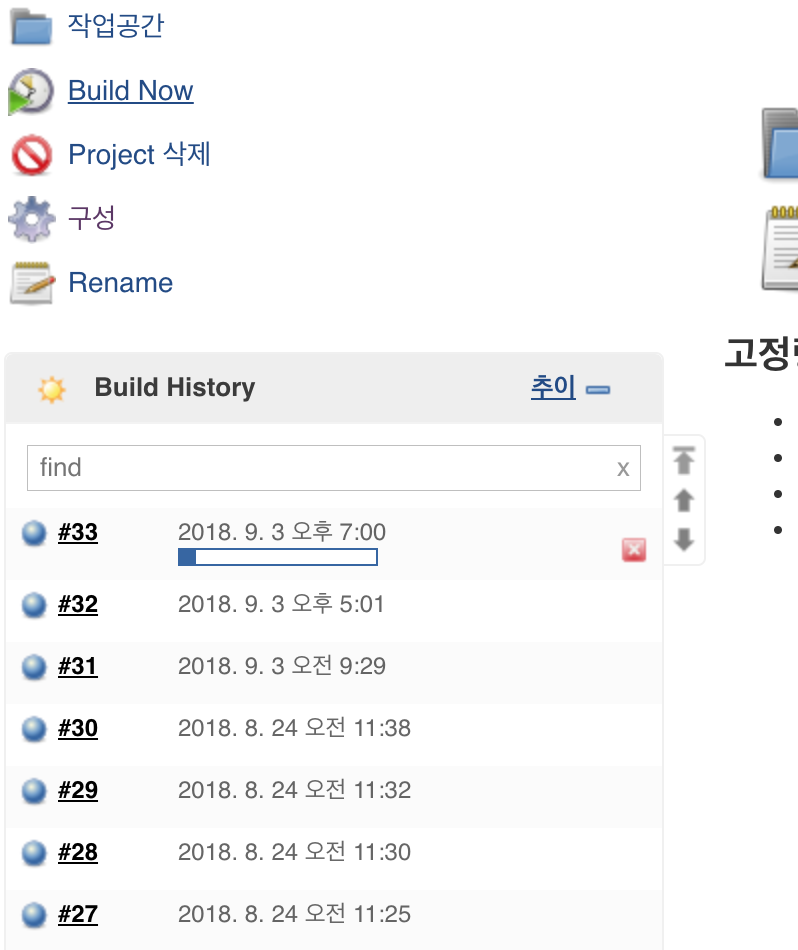
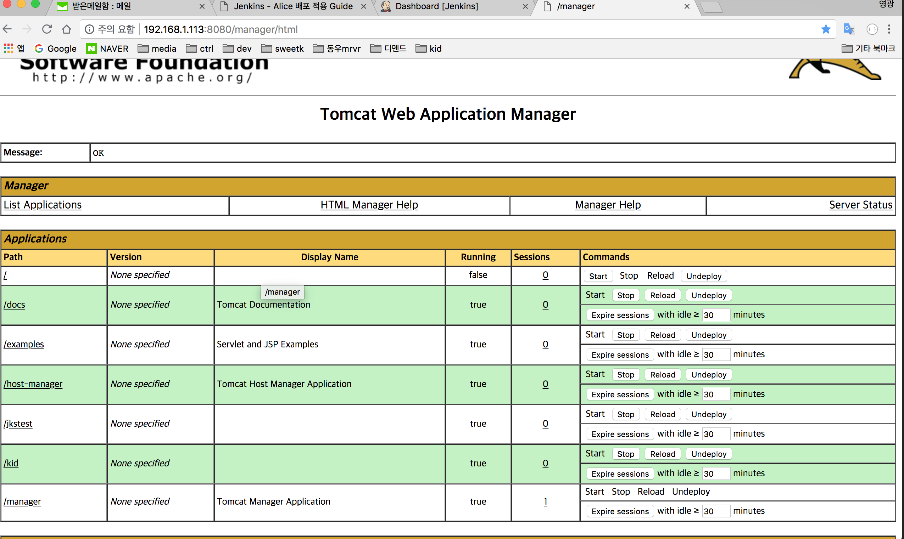

이번 KID 프로젝트를 진행하며 수석님께서 젠킨스 사용을 권장하셨고
현재 Alice PC에 VirtureBox로 실행되고 있는 우분투 OS에
젠킨스를 설치하여 svn 또는 github, gutlab으로 프로젝트 형상관리를 하면서
타겟으로 지정한 곳에 레파지토리의 프로젝트를
클릭 한 번으로 배포할 수 있습니다.(지속적인 빌드 유발하는 -스크립트, 스케줄러- 등의 여러가지 방법이 있지만 일단 저는 클릭으로만..)
현재 가상 우분투 OS에는 자바 프로젝트 기준으로 Open JDK, Tomcat8, mysql 5.x, 기타등등 이 설치 되어있고 톰캣 서버와 제티(젠킨스)서버가 실행되고 있어 각각 포트로 접속하면 각 해당 매니저로 접속되게 됩니다.
다른 PC에 하셔도 되지만 alice pc의 우분투 배포 설정 마쳤고 테스트 플로우를 빠르게 이용 하실 수 있기되어 가이드를 작성하여 공유합니다.
이번 프로젝트에는 private 레파지토리가 필요하였기에
gitLab을 이용하여 gitLab 기준으로 작성하였지만 기타 svn이나 gitHub 의 연동법이 더 간단하고 편합니다.
ssh, manager 접속 정보 및 계정정보, 설치경로 등은 정리하여 이메일로 첨부하겠습니다.
gitLab repo 생성 및 엑세스 토큰 설정
1. gitlab.com 에 접속합니다.
2. (계정이 없다면 생성) 후 우측의 New project를 눌러 레파지토리를 생성합니다.

 인증없이 엑세스를 하려면 Public으로
인증없이 엑세스를 하려면 Public으로
3. 생성된 레파지토리를 확인하고 URL을 복사합니다.
 프로젝트 확인

HTTPS URL로 변경후 복사
프로젝트 확인

HTTPS URL로 변경후 복사
4. 엑세스 토큰 생성
우측상단 유저선택 - > Curent User 선택 -> 엑세스 토큰 ->
-> 정보입력 -> 토큰 생성 및 복사
 우측상단 유저선택 - > Curent User 선택
우측상단 유저선택 - > Curent User 선택

정보 입력후 토큰 생성
젠킨스 설정
필요사항
1. 레파지토리 URL, 2.엑세스 토큰 3.gitLab 계정
- 이클립스 깃랩 연동은 생략
1. Jenkins Dashboard 접속
 Jenkins Dashboard - 현재 구동되고 있는 item list 화면이 보여짐
Jenkins Dashboard - 현재 구동되고 있는 item list 화면이 보여짐
2. Credentials 추가
젠킨스에 깃랩 토큰 정보를 저장한다.
죄측메뉴 Credentials -> System -> Global credentials (unrestricted) -> 좌측메뉴 Add Credentials -> kind 설정 (GitLab Api Token) -> 정보 입력
 깃랩 토큰 정보를 저장
깃랩 토큰 정보를 저장
3. 사용 Tool 정보 확인
ITEM 추가 전 좌측메뉴 Jenkins 관리 - Global Tool Configuration 에서 사용 Tool 정보 확인
현재 JDK , GIT, MAVEN 설정 해놓음, GADLE, ANT, DOCKER 는 설정 안되어있음. Global Tool Configuration
4. 새로운 item 생성
대쉬보드로 돌아가서 좌측 메뉴의 '새로운 item' 을 선택
item 이름을 설정하고 Freestyle project로 선택
 새로운 item 진입 후 화면
각 항목들의 옵션 값들을 입력하여준다.
오래된 빌드는 삭제하기 위해서 보관 갯수를 10개로 설정하였다.
소스코드 관리 항목에서는 레파지토리 정보를 저장한다.
url 에는 깃랩에서 생성한 프로젝트의 url을 입력하고
Credentioals 에는 gitLab 로그인 계정정보를 입력한다. - 상기 입력한 엑세스 토큰정보 아님 -
빌드유발 , 빌드환경은 현재는 아무것도 없이 default로 해두었지만 필요시에 선택하여 정보 입력한다.
 빌드 유발  빌드 환경
빌드는 현재 메이븐 빌드로 되어있어 빌드항목을 Invoke top-level Maven target으로 설정을 추가하였고, 환경변수를 설정해 놓았기에 저장해놓은 M2_HOME으로 사용해도 되고 추가로 Global Tool Configuration 메뉴에 가서 추가해도 됩니다.
POM 항목에는 생성되는 프로젝트의 POM.xml 경로를 추가해야합니다.
빌드 후 조치 항목에는 현재 톰캣 구동되 있는 곳에 war로 배포할 것이기에
사진과 같이 WAR/EAR fils에 **/*.war
Context path 에 path로 설정할 이름,
Container에 톰캣8을 선택하여 Credentials 에 admin을 선택 -tomcat-usel.xml 현재 설정을 admin으로 해놓았음. -하고
Tomcat URL에 사진과 같이 ip:포트를 입력하게 되면
젠킨스 워크폴더로부터 톰캣으로 war 배포 설정이 완료 됩니다.
5. 빌드 확인
대쉬보드로 돌아가게되면 생성된 item 리스트들이 나오는데 생성한 아이템을 선택하고 들어가면 아래와 같이 메뉴가 구성됩니다.
 item detailitem으로 들어가 좌측메뉴의 Build Now를 선택하면 빌드가 진행된다.
 Build Now빌드가 완료되면 대쉬보드에 성공여부 그리고 그 빌드에 번호가 부여되서 나타나게 되는데 해당 번호를 선택하게 되면 아래 사진과 같이 그 빌드에 대한 정보들을 담고있다.
또 콘솔에 대한 로그도 여기서 확인할 수 있다. (제티 로그만, 톰캣로그는 안나옴 )
6. 배포 확인
위 처럼 빌드가 완료되면 톰캣 매니저로 들어가 해당 프로젝트가 디플로이 되었는지 확인한다.

배포 확인